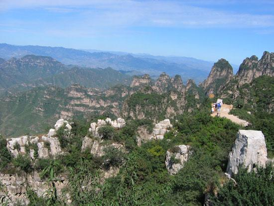
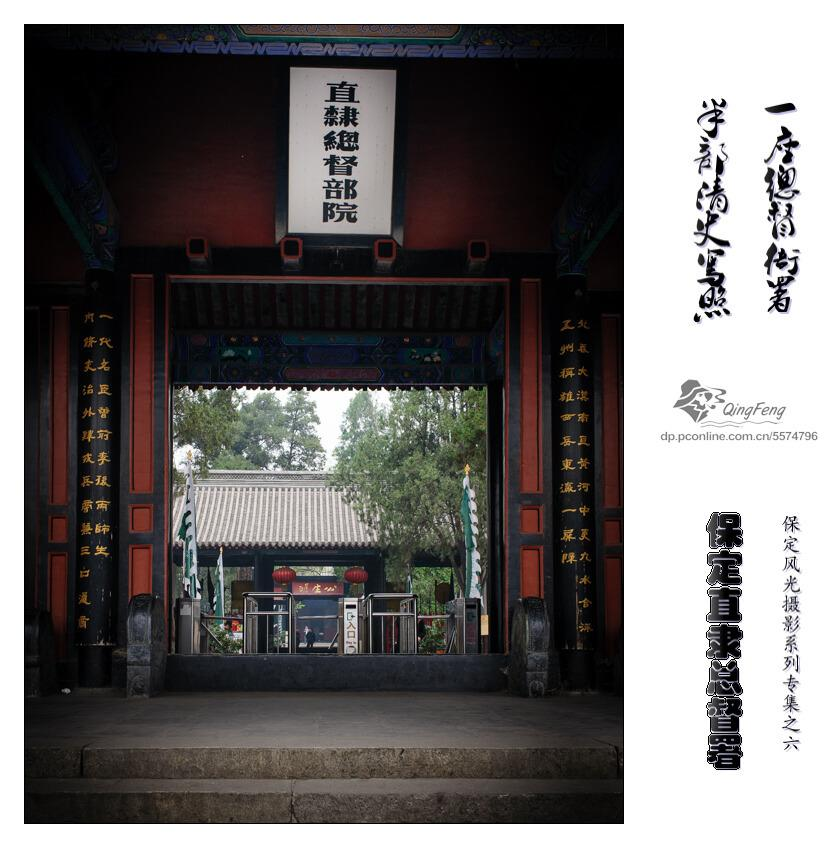
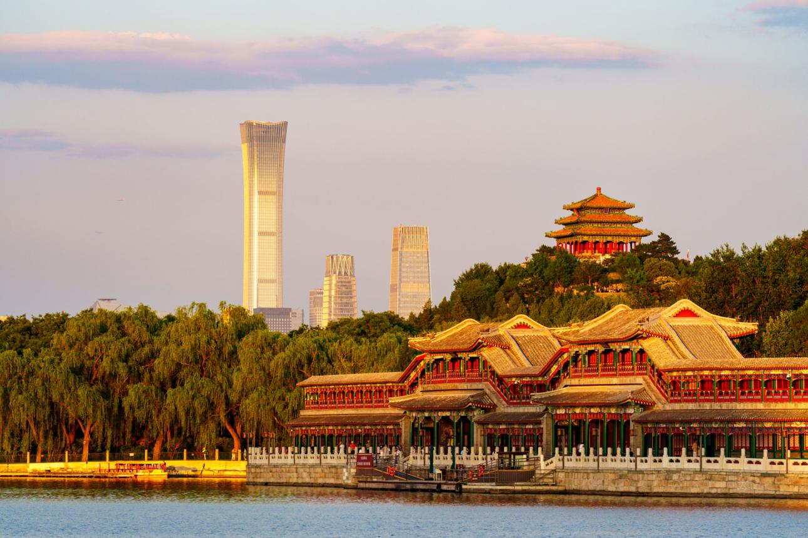
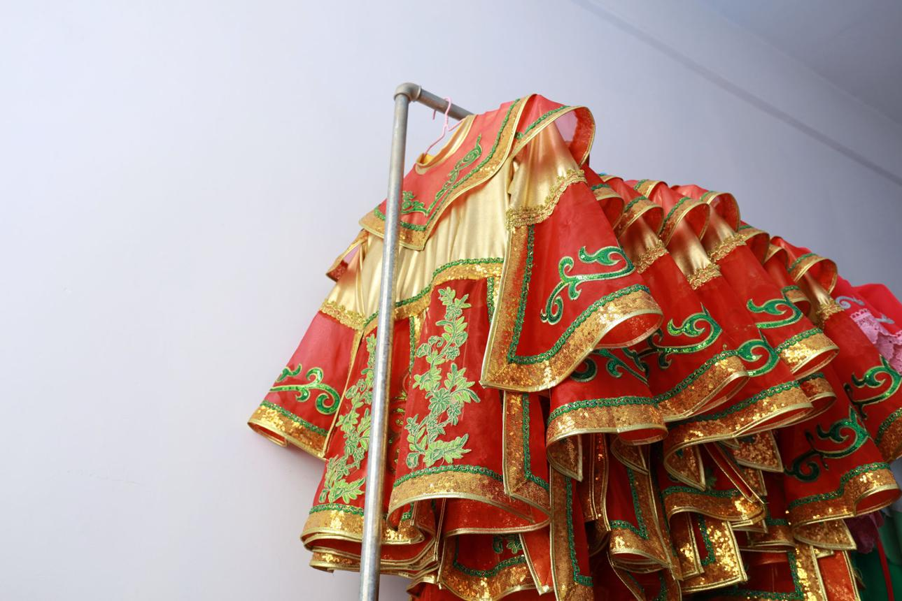

Baiyangdian Lake
Known for lotus, reeds, and calm wetland scenery, Baiyangdian is one of the best-known natural highlights in the region.
Baoding offers a combination of natural scenery and historical landmarks.
Known for lotus, reeds, and calm wetland scenery, Baiyangdian is one of the best-known natural highlights in the region.

Langya Mountain combines striking mountain views with historical meaning, making it suitable for both sightseeing and reflection.

This landmark reflects Baoding's political importance in imperial history and highlights traditional architecture.

A quieter cultural site with water, traditional buildings, and a refined classical atmosphere.
Baoding's food is direct, rich, and full of local character. The city's best-known specialty is Baoding Donkey Burger, with crisp bread and flavorful meat.
This style of food reflects the practical, warm, and down-to-earth daily life of northern China.


Baoding has a strong cultural foundation. Opera, folk customs, traditional art, and public festivals continue to shape the city's atmosphere.
The cultural feeling of Baoding is not only seen in museums or old sites, but also in everyday local life.
Baoding has a convenient transport position in Hebei Province and remains closely connected to nearby major cities.
High-speed rail, regular trains, highways, and buses make the city accessible for travel, study, and regional visits.